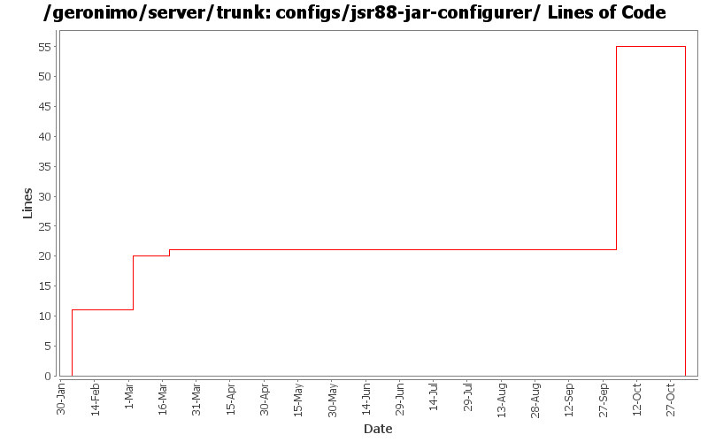

[root]/configs/jsr88-jar-configurer
 src
(0 files, 0 lines)
src
(0 files, 0 lines)
 main
(0 files, 0 lines)
main
(0 files, 0 lines)
 plan
(0 files, 0 lines)
plan
(0 files, 0 lines)
 plan
(0 files, 0 lines)
plan
(0 files, 0 lines)

| Author | Changes | Lines of Code | Lines per Change |
|---|---|---|---|
| Totals | 14 (100.0%) | 72 (100.0%) | 5.1 |
| djencks | 1 (7.1%) | 34 (47.2%) | 34.0 |
| jdillon | 4 (28.6%) | 24 (33.3%) | 6.0 |
| gdamour | 4 (28.6%) | 12 (16.7%) | 3.0 |
| prasad | 4 (28.6%) | 1 (1.4%) | 0.2 |
| hogstrom | 1 (7.1%) | 1 (1.4%) | 1.0 |
GERONIMO-3565. Configs distributed amongst framework/configs and plugins
0 lines of code changed in 3 files:
GERONIMO-3496 assemble servers out of plugins
34 lines of code changed in 1 file:
* updated copyright date to 2007
1 lines of code changed in 1 file:
Changed trunk to 2.1-SNAPSHOT
1 lines of code changed in 1 file:
* Do not start jsr88-cli within the server. It defines a GBean implementing
the PluginInstaller type, GBean named ModuleConfigurerRegistry, which
is not intended to be used within a server as the other GBeans of this
module. This causes a NPE during the installation of plugins via the command
line deployer: CommandInstallCAR tries to execute startInstall
against all the GBeans implementing the PluginInstaller type and this
invokation fails with a NPE against ModuleConfigurerRegistry.
* Push up the DeploymentFactoryImpl implementation to BaseDeploymentFactory,
such that DeploymentFactoryWithKernel can extend it instead of
DeploymentFactoryImpl. This refactoring is done to ensure that
DeploymentFactoryWithKernel does not register a DeploymentFactoryImpl
instance with DeploymentFactoryManager (done via a static block).
This fixes GERONIMO-2983 Installation of plugins via the command line is
broken.
1 lines of code changed in 1 file:
Normalize all configs/*/pom.xml headers
14 lines of code changed in 1 file:
Std props
dos2unix on some files with inconsistent newlines
10 lines of code changed in 3 files:
Online deployer, i.e. deployer.jar, boots a Kernel to load its dependencies,
e.g. geronimo-deploy-tool, and registers the available ModuleConfigurers with
the DeploymentManager.
ModuleConfigurers to be registered are loaded by the persistent configuration
list jsr88-configurer-config.xml.
In the case of an offline deployment, the online deployer starts the
offline-deployer configuration within the same Kernel. In turn, the
offline-deployer configuration starts a list of configurations to register
the available module builders.
Add a log4j configuration for the online deployer.
This fixes:
* GERONIMO-2794 - Improve online deployer to register ModuleConfigurers from the repository; and
* GERONIMO-2767 - Minimize side effects of the offline deployer
11 lines of code changed in 3 files: